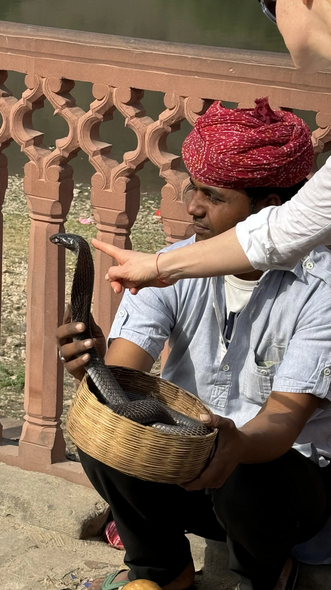
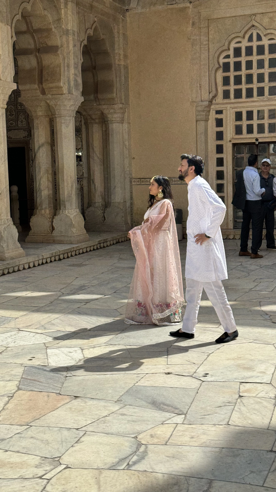
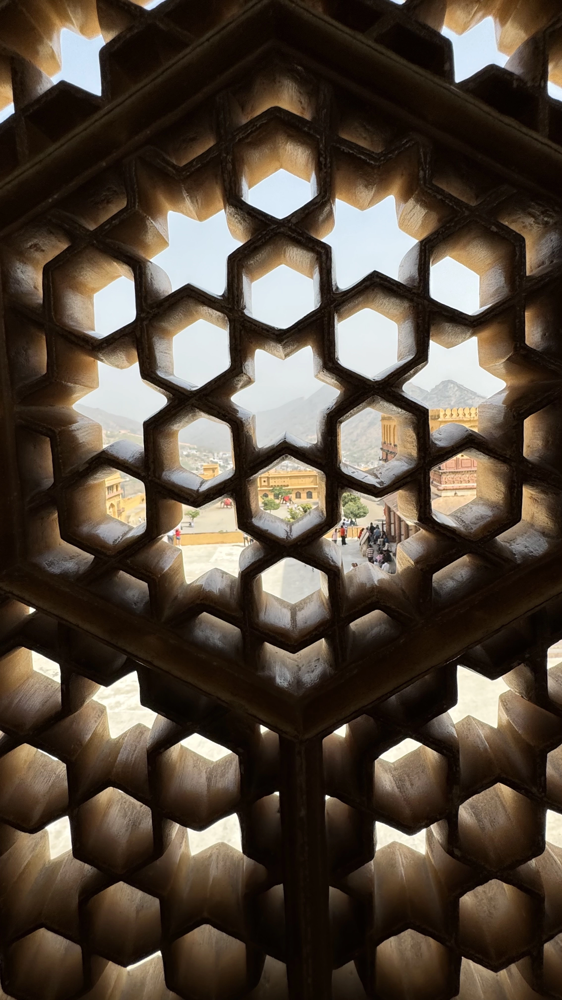

Découverte du Rajasthan : La Terre des Rois
Histoire

Le Rajasthan, littéralement "le pays des rois", est une région de l'Inde riche en histoire et en culture. Situé dans le nord-ouest de l'Inde, cet État a été le théâtre de nombreuses dynasties et royaumes. Ses racines historiques remontent à l'époque des Rajputs, des clans guerriers célèbres pour leur bravoure, leur honneur et leur art de la guerre. Le Rajasthan a vu émerger de grands royaumes comme ceux de Mewar, Marwar, Jaipur, Bikaner et Jaisalmer. Ces royaumes ont laissé un héritage architectural impressionnant avec des forts majestueux, des palais opulents et des temples magnifiquement sculptés. Après la colonisation britannique, le Rajasthan est devenu une partie de l'Inde indépendante en 1947, conservant son riche patrimoine culturel et historique.
Économie
L'économie du Rajasthan est diversifiée et dynamique, avec des secteurs clés incluant l'agriculture, le tourisme, l'artisanat, l'industrie minière et les textiles. L'agriculture reste une activité majeure, avec des cultures comme le blé, le millet, le coton et les légumes. Le Rajasthan est également riche en minéraux, notamment le marbre, le granit, le calcaire et le gypse, ce qui alimente une industrie minière prospère.
Le tourisme est un pilier essentiel de l'économie, attirant des millions de visiteurs chaque année grâce à ses monuments historiques, ses festivals colorés et ses paysages désertiques. L'artisanat traditionnel, comme les bijoux, les textiles teints à la main, les poteries et les sculptures en bois, contribue également de manière significative à l'économie locale. En outre, des villes comme Jaipur et Udaipur sont devenues des centres importants pour le commerce de pierres précieuses et semi-précieuses.
Architecture
L'architecture du Rajasthan est une symphonie de styles rajput, moghol et britannique, reflet de son riche passé historique. Les forts et les palais majestueux du Rajasthan sont des témoignages de la grandeur des anciens royaumes. Les structures en grès et marbre, ornées de sculptures détaillées et de peintures murales, illustrent l'art et l'ingéniosité des artisans de l'époque.
Les temples du Rajasthan sont tout aussi impressionnants, comme le temple de Ranakpur, un magnifique temple jaïn en marbre blanc avec des sculptures complexes, et le temple de Dilwara à Mont Abu, célèbre pour ses gravures délicates.
Les havelis, ou maisons traditionnelles, comme celles de Jaisalmer et Shekhawati, sont ornées de fresques et de sculptures détaillées, offrant un aperçu de la vie opulente des marchands et des nobles.
Tourisme
Le Rajasthan est une destination touristique majeure, offrant une combinaison unique de culture, d'histoire et de paysages pittoresques. Les visiteurs peuvent explorer les forts et les palais, assister à des festivals vibrants, et découvrir la riche culture et les traditions de la région. Les safaris dans le désert du Thar, les promenades en chameau et les séjours dans des hôtels patrimoniaux ajoutent une touche d'aventure et de luxe à l'expérience touristique.
Les marchés locaux sont des trésors de textiles colorés, de bijoux, de poteries et d'artisanat. Les festivals, comme le festival de Pushkar, le festival de la couleur (Holi) et le festival de Diwali, sont des événements culturels majeurs qui attirent des touristes du monde entier. La cuisine rajasthani, avec ses plats épicés comme le dal baati churma et le gatte ki sabzi, est un régal pour les gourmets.
Le Rajasthan en Quelques Chiffres
- Population : Environ 68 millions d'habitants
- Superficie : 342 239 km²
- Capitale : Jaipur
- Principales villes : Jaipur, Udaipur, Jodhpur, Jaisalmer, Bikaner, Ajmer
- Climat : Tropical et désertique, avec des étés chauds et des hivers doux
- Langue officielle : Hindi, Rajasthani
Les 10 Incontournables d'Orchha
- 1. Fort d'Amber (Jaipur)
Un fort majestueux surplombant la ville de Jaipur, connu pour ses cours magnifiquement décorées et ses palais. - 2. City Palace (Jaipur)
Un complexe royal au cœur de Jaipur, mélangeant les styles architecturaux rajput et moghol. - 3. Fort de Mehrangarh (Jodhpur)
Un des plus grands forts de l'Inde, offrant une vue imprenable sur la "ville bleue" de Jodhpur. - 4. Lac Pichola (Udaipur)
Un lac pittoresque entouré de palais et de temples, avec le célèbre Lake Palace au centre. - 5. Fort de Jaisalmer
Un fort doré dominant la ville de Jaisalmer, connu pour ses havelis et ses temples. - <6. style="font-weight: bolder;">6. Temple de Ranakpur
Un temple jaïn en marbre blanc, célèbre pour ses sculptures détaillées et ses piliers finement gravés. - 7. Palais de la Cité (Udaipur)
Un vaste complexe de palais, jardins et musées sur les rives du lac Pichola. - 8. Festival de Pushkar
Un des plus grands marchés aux chameaux du monde, avec des compétitions, des foires et des spectacles culturels. - 9. Palais Umaid Bhawan (Jodhpur)
Un des plus grands palais privés du monde, en partie transformé en hôtel de luxe. - 10. Mont Abu
La seule station de montagne du Rajasthan, connue pour ses paysages verdoyants et le temple de Dilwara.
Vous souhaitez plus d'informations
N'hesitez à nous contacter pour plus de renseignements sur nos services, nous sommes à votre ecoute pour faire de ce voyage un moment inoubliable